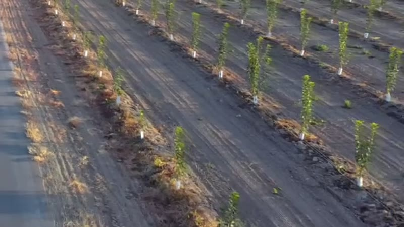
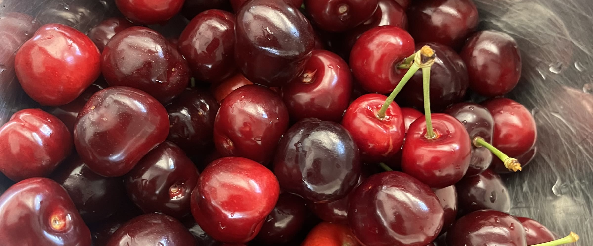
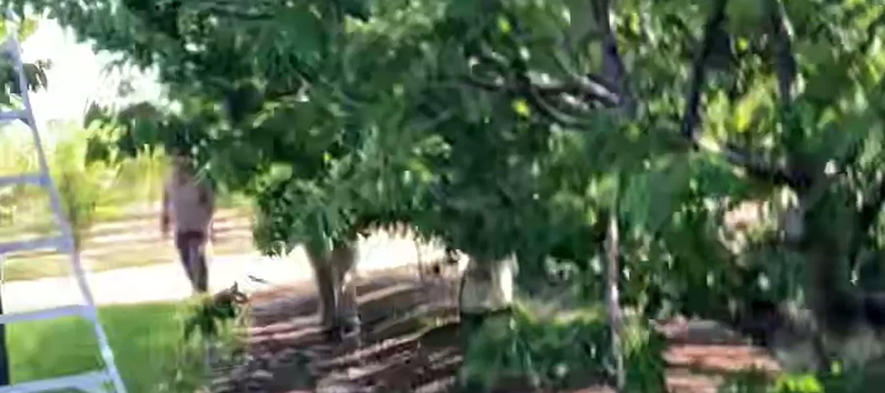
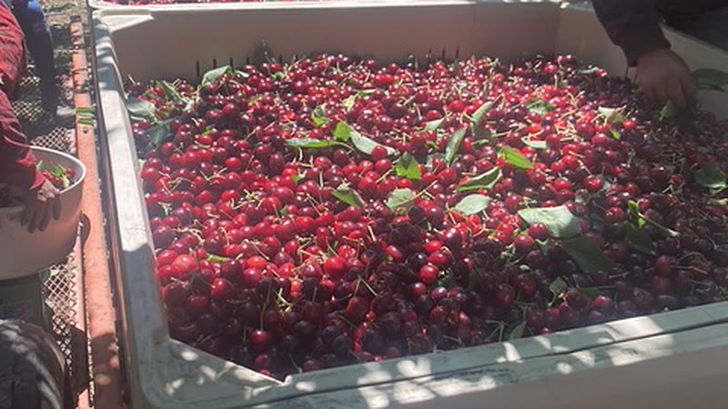
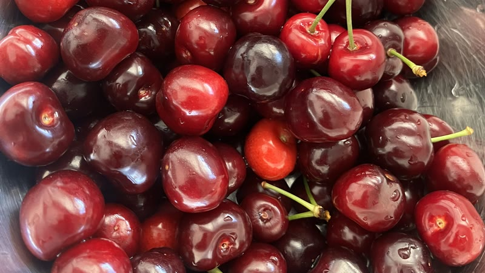
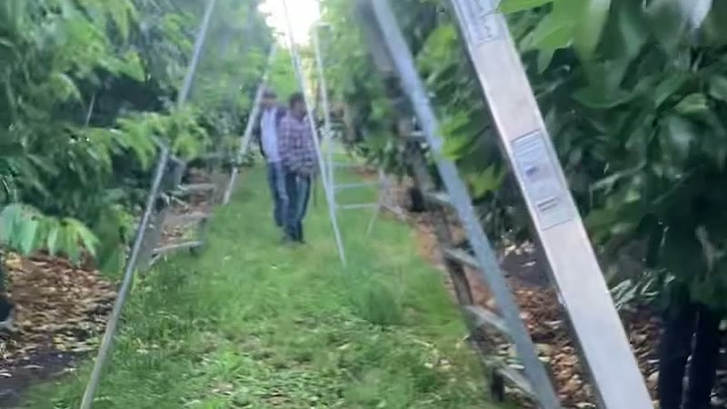
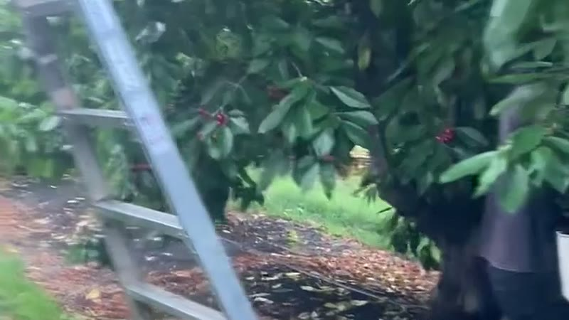
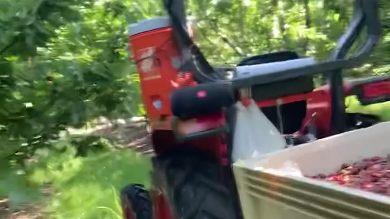

Cherry Planting & Orchard Establishment
Orchard design, site preparation, planting and irrigation setup for healthy, productive trees from the start.

Cherry Services
Ceja Farms provides reliable cherry services to help growers establish strong orchards and bring in a quality harvest.
From orchard establishment to harvest support, we have the crews, equipment and experience to help you get the job done right.

Orchard design, site preparation, planting and irrigation setup for healthy, productive trees from the start.

Training, pruning, and ongoing management to promote strong growth, higher yields and long-term orchard health.

Efficient, careful picking crews and equipment to help protect your crop quality and maximize your yield.

Haul-off assistance and field support to help keep your harvest moving smoothly.

Ceja Farms can assist qualifying growers with the application process for available tree-assistance programs through the San Joaquin Valley Air Pollution Control District and USDA Tree Assistance Program (TAP).
Learn More About TAP AssistanceSeasoned, dependable crews that understand the demands of cherry production.
Well-maintained equipment built for efficiency and the job at hand.
Safety is a priority in every aspect of our operations.
We know timing is critical during bloom, thinning and harvest.
We work hard to build long-term relationships based on trust and results.




